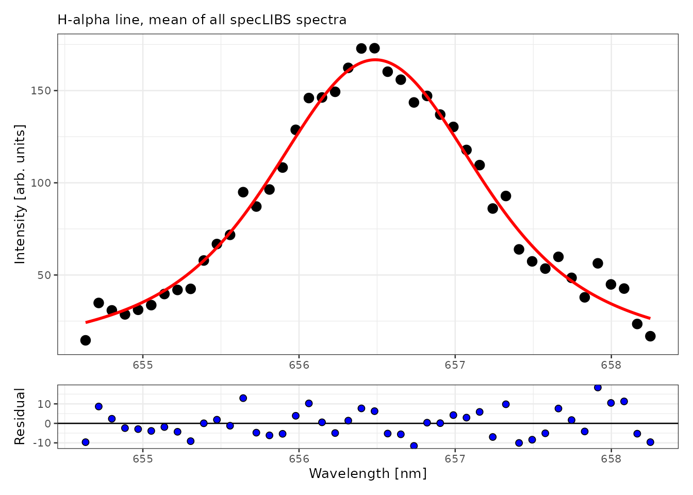
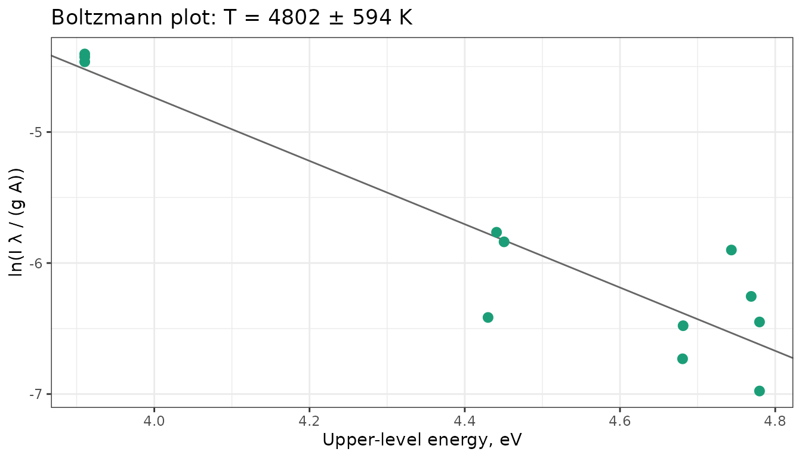

Plasma diagnostics: electron density, temperature and self-absorption
Source:vignettes/plasma-diagnostics.Rmd
plasma-diagnostics.RmdQuantitative LIBS relies on the plasma being in local thermodynamic
equilibrium (LTE), optically thin, and recorded within the linear range
of the detector. This vignette shows how to check these conditions and
how to measure the two quantities that describe the plasma: the electron
density N_e, from the Stark broadening
of a line, and the excitation temperature T, from Boltzmann and Saha-Boltzmann plots.
It uses the spectra of specLIBS and fourrage,
atomic data from the NIST Atomic Spectra Database, and Stark broadening
parameters from the STARK-B database.
Two limitations of these data affect every number below:
- The intensities are not corrected for the spectral response of the instrument, which weights lines at different wavelengths differently. The temperatures are therefore indicative.
- The acquisition delay and gate are not known. N_e and T change quickly as the plasma cools, and the values are averages over the gate.
library(specProc)
library(dplyr)
library(tidyr)
library(tibble)
library(ggplot2)
data(specLIBS)
meta_cols <- c("Sample", "Location", "Clay", "Sand", "Silt", "Texture", "Structure", "Type")
channels <- setdiff(names(specLIBS), meta_cols)
wl <- as.numeric(channels)Detector saturation
A saturated line is clipped at the detector’s maximum count: its area
and width are wrong, and it no longer grows with concentration. It must
be excluded from any diagnostic. saturation_summary() lists
the saturated channels. The fourrage spectra are means of 8
shots, so we count as saturated the channels whose mean is within 1% of
the 16-bit limit (65535), that is, saturated in nearly every shot:
data(fourrage)
saturated <- saturation_summary(fourrage[-(1:14)], limit = 65535, tolerance = 655)
# adjacent saturated channels belong to the same line
saturated$channels |>
mutate(line = cumsum(c(1, diff(index) > 2))) |>
group_by(line) |>
summarise(wavelength = round(mean(wavelength), 2), channels = n(),
measurements = max(n_spectra)) |>
select(-line) |>
arrange(desc(measurements))
#> # A tibble: 11 × 3
#> wavelength channels measurements
#> <dbl> <int> <dbl>
#> 1 397. 2 362
#> 2 393. 3 272
#> 3 399. 2 184
#> 4 280. 1 98
#> 5 388. 1 65
#> 6 280. 2 50
#> 7 423. 2 42
#> 8 589. 1 18
#> 9 770. 3 7
#> 10 590. 1 4
#> 11 391 1 1The strongest lines of the forage spectra are saturated in a large
share of the measurements: Ca II 393.37 and 396.85 nm, Mg II 279.55 and
280.27 nm, the Ca I resonance line at 422.67 nm, and some Na and K
lines. None of them can be used for plasma diagnostics in these data.
The specLIBS spectra peak at 28446 counts, well below the
limit:
nrow(saturation_summary(specLIBS[channels], limit = 65535)$channels)
#> [1] 0We use specLIBS below, averaged over all 400 spectra
after baseline correction, which gives a single high signal-to-noise
spectrum:
spectrum <- baseline_arpls(specLIBS[channels], lambda = 1e5, max.iter = 20)$correction |>
colMeans()Electron density from the H\alpha line
Water and organic matter in the soil give a hydrogen line at 656.28 nm. H\alpha is the standard density diagnostic in LIBS: its Stark width is large, it is rarely self-absorbed, and computer simulations relate its width to N_e with little dependence on temperature (Gigosos et al., 2003). The relation between width and density applies to the full width at half maximum (FWHM) of H\alpha’s Stark profile, which is not Lorentzian. We therefore fit a Voigt profile only to describe the line shape, and use its total FWHM:
halpha_window <- channels[wl > 654.6 & wl < 658.3]
halpha_fit <- as_tibble(as.list(spectrum[halpha_window])) |>
peak_fit(profile = "voigt")
halpha_fit$tidied[[1]]
#> # A tibble: 5 × 5
#> term estimate std.error statistic p.value
#> <chr> <dbl> <dbl> <dbl> <dbl>
#> 1 y0 3.58 17.1 0.209 8.35e- 1
#> 2 xc 656. 0.0131 50187. 6.40e-154
#> 3 wG 0.845 0.536 1.58 1.23e- 1
#> 4 wL 1.18 0.731 1.61 1.16e- 1
#> 5 A 379. 130. 2.92 5.78e- 3
plot_fit(halpha_fit, title = "H-alpha line, mean of all specLIBS spectra")
widths <- halpha_fit$tidied[[1]] |> select(term, estimate) |> deframe()
fwhm_halpha <- voigt_fwhm(widths[["wG"]], widths[["wL"]])
ne <- electron_density(fwhm_halpha, method = "halpha")
c(fwhm_nm = fwhm_halpha, electron_density = ne)
#> fwhm_nm electron_density
#> 1.636163e+00 1.800555e+17The Gaussian and Lorentzian widths of the fit have large standard errors: with a noisy line, the fit can trade one for the other. Their combination, the total width, is much better determined. The instrumental width, about 0.1 to 0.2 nm judging from the narrow lines of these spectra, is small compared with the FWHM of 1.64 nm and changes it by less than 1% when subtracted in quadrature, so we neglect it. The width gives N_e \approx 1.8e+17 cm^{-3}, a typical value for LIBS plasmas in air a few hundred nanoseconds to a few microseconds after the laser pulse.
Temperature from Boltzmann plots
Atomic data
A Boltzmann plot needs, for each line, the transition probability
A_{ki}, the statistical weight g_k and the energy E_k of the upper level.
nist_lines() retrieves them from the NIST Atomic Spectra
Database, and nist_ionization_energy() the ionization
energies:
ca_neutral <- nist_lines("Ca I", wavelength = c(420, 660))
ca_ion <- nist_lines("Ca II", wavelength = c(310, 400))
ionization_energy <- nist_ionization_energy("Ca I")So that this vignette runs without an internet connection, the values retrieved for the calcium lines used below are included here (NIST ASD, Kramida et al.):
atomic <- tribble(
~species, ~stage, ~wavelength, ~Aki, ~accuracy, ~Ek, ~gk,
"Ca I", 1, 428.301, 4.34e7, "C+", 4.779784, 5,
"Ca I", 1, 430.253, 1.36e8, "C+", 4.779784, 5,
"Ca I", 1, 431.865, 7.40e7, "C+", 4.7690284, 3,
"Ca I", 1, 443.496, 6.70e7, "C", 4.680635, 5,
"Ca I", 1, 445.478, 8.70e7, "C", 4.681327, 7,
"Ca I", 1, 558.876, 4.90e7, "D", 4.7435268, 7,
"Ca I", 1, 610.272, 9.60e6, "C", 3.910399, 3,
"Ca I", 1, 612.222, 2.87e7, "C", 3.910399, 3,
"Ca I", 1, 616.217, 4.77e7, "C", 3.910399, 3,
"Ca I", 1, 643.907, 5.30e7, "D", 4.450647, 9,
"Ca I", 1, 646.257, 4.70e7, "D", 4.4409544, 7,
"Ca I", 1, 649.378, 4.40e7, "D", 4.4300117, 5,
"Ca II", 2, 315.887, 3.10e8, "C", 7.047169, 4,
"Ca II", 2, 317.933, 3.60e8, "C", 7.049551, 6,
"Ca II", 2, 370.603, 8.80e7, "C", 6.467875, 2,
"Ca II", 2, 373.690, 1.70e8, "C", 6.467875, 2
)
ionization_energy <- 6.1131549 # Ca I, eV (NIST ASD)The accuracy grades of these transition probabilities (C: ≤ 25%, D: ≤ 50%) limit the precision of any temperature derived from them. The Ca II resonance lines at 393.37 and 396.85 nm are left out: they are strongly self-absorbed, as shown at the end of this vignette.
Line intensities
The spectrometer’s wavelength scale is offset from the NIST wavelengths by about one channel in places, so each line area is summed over ±0.15 nm around the observed peak within 0.2 nm of the tabulated wavelength:
Boltzmann plot of the neutral atom
neutral <- boltzmann_plot(filter(lines, stage == 1))
neutral
#> Boltzmann plot (12 lines)
#>
#> Temperature: 4802 ± 594 K
#> R-squared: 0.8671
plot_boltzmann(neutral)
Saha-Boltzmann plot
Adding lines of the ion extends the energy range. The Saha equation places them on the same plot, using the electron density measured on H\alpha:
saha <- saha_boltzmann_plot(lines, ionization_energy = ionization_energy, electron_density = ne)
saha
#> Saha-Boltzmann plot (16 lines)
#>
#> Temperature: 8791 ± 246 K
#> R-squared: 0.9891
#> Ne: 1.8e+17 cm-3
plot_boltzmann(saha)
The Ca I lines come from upper levels between 3.9 and 4.8 eV. Over such a narrow range, the slope of the Boltzmann plot is sensitive to errors in a few intensities or transition probabilities (graded C and D, that is, uncertain by 25 to 50%): its temperature, 4800 ± 590 K, is far below the Saha-Boltzmann estimate. This is the usual problem of Boltzmann plots with lines of a single species.
The ionic points extend the abscissa by the ionization energy, to about 13 eV, and the Saha-Boltzmann fit gives T \approx 8800 K with a standard error of 250 K. The standard error reflects the scatter of the points, not the systematic errors of the transition probabilities, the spectral response, or the density.
Is the plasma in LTE?
The McWhirter criterion gives the minimum density for collisions to dominate the population of the levels. The largest energy gap here is the first excited level of Ca II, 3.15 eV above the ground state:
lte <- mcwhirter_criterion(temperature = saha$temperature, delta_e = 3.15, electron_density = ne)
lte
#> # A tibble: 1 × 5
#> temperature delta_e minimum_density electron_density satisfied
#> <dbl> <dbl> <dbl> <dbl> <lgl>
#> 1 8791. 3.15 4.69e15 1.80e17 TRUEThe measured density is 38 times the minimum. The criterion is necessary but not sufficient: in a transient, inhomogeneous plasma, LTE also requires equilibration to be faster than the changes of the plasma (Cristoforetti et al., 2010).
Stark broadening parameters from STARK-B
For lines other than H\alpha, the
electron density follows from the Stark width in the impact
approximation, N_e = N_{ref}\,w /
w_{ref}(T), with w_{ref} from
STARK-B. starkb_lines() downloads the widths and shifts of
a species:
stark <- tryCatch(
starkb_lines("Ca II", wavelength = c(390, 400), perturber = "electron"),
error = function(e) NULL
)
if (is.null(stark)) {
message("STARK-B could not be reached; the sections that need it are skipped.")
} else {
stark |> filter(density == 1e17) |> select(wavelength, upper, lower, temperature, width, shift)
}
#> # A tibble: 6 × 6
#> wavelength upper lower temperature width shift
#> <dbl> <chr> <chr> <dbl> <dbl> <dbl>
#> 1 395. 3p6.4p 2Po 3p6.4s 2S 5000 0.0296 -0.00507
#> 2 395. 3p6.4p 2Po 3p6.4s 2S 10000 0.0228 -0.00418
#> 3 395. 3p6.4p 2Po 3p6.4s 2S 20000 0.0188 -0.00324
#> 4 395. 3p6.4p 2Po 3p6.4s 2S 30000 0.0177 -0.00275
#> 5 395. 3p6.4p 2Po 3p6.4s 2S 50000 0.0171 -0.00257
#> 6 395. 3p6.4p 2Po 3p6.4s 2S 100000 0.0166 -0.00214STARK-B tabulates the Ca II 4s–4p multiplet at its mean wavelength.
stark_width() interpolates the width at the plasma
temperature, scales it linearly to the electron density, and converts
the multiplet width to that of the line with the \lambda^2 rule:
thin <- stark_width(stark, wavelength = 393.366, temperature = saha$temperature,
density = ne, tolerance = 2)
thin
#> # A tibble: 1 × 9
#> wavelength tabulated_wavelength upper lower perturber temperature density
#> <dbl> <dbl> <chr> <chr> <chr> <dbl> <dbl>
#> 1 393. 395. 3p6.4p 2Po 3p6.… electron 8791. 1.80e17
#> # ℹ 2 more variables: width <dbl>, shift <dbl>If the service is not available, a table saved earlier can be read
with read_starkb(), and widths from other sources can be
entered with stark_table(), which takes tabulated values or
STARK-B’s fitted temperature laws:
# made-up widths of a hypothetical line, in Angstrom at 1e17 cm-3
stark_table(wavelength = 5000, temperature = c(5000, 10000, 20000),
width = c(0.20, 0.16, 0.13), units = "A", species = "X II")
#> # A tibble: 3 × 10
#> species wavelength upper lower perturber temperature density width shift
#> <chr> <dbl> <chr> <chr> <chr> <dbl> <dbl> <dbl> <dbl>
#> 1 X II 500 "" "" electron 5000 1e17 0.02 0
#> 2 X II 500 "" "" electron 10000 1e17 0.016 0
#> 3 X II 500 "" "" electron 20000 1e17 0.013 0
#> # ℹ 1 more variable: source <chr>Take the values of your line from the database or the literature, and state their units, since widths are published in both Å and nm.
Self-absorption of a resonance line
Resonance lines end on the ground state, which is heavily populated, so the plasma reabsorbs their light. Self-absorption flattens and broadens the line: its measured Stark width exceeds the width expected at the plasma’s electron density. The ratio gives the self-absorption coefficient SA (El Sherbini et al., 2005), the fraction of the peak intensity that escapes. Ca II 393.37 nm is an isolated line, so its Stark profile is Lorentzian: we fit it jointly with its neighbors and take its Lorentzian width:
ca_window <- channels[wl > 392.9 & wl < 397.3]
ca_fit <- as_tibble(as.list(spectrum[ca_window])) |>
multipeak_fit(peaks = c(393.37, 394.40, 396.15, 396.85), profiles = "voigt")
measured <- ca_fit$tidied[[1]] |> filter(term == "wL_1")
measured
#> # A tibble: 1 × 5
#> term estimate std.error statistic p.value
#> <chr> <dbl> <dbl> <dbl> <dbl>
#> 1 wL_1 0.102 0.0260 3.90 0.000399
self_absorption(width = measured$estimate, thin_width = thin$width)
#> # A tibble: 1 × 4
#> width thin_width SA intensity_correction
#> <dbl> <dbl> <dbl> <dbl>
#> 1 0.102 0.0428 0.202 4.95The measured Lorentzian width, 0.102 nm, is 2.4 times the optically thin width of 0.043 nm, which gives SA of about 0.2: only a fraction of the peak intensity escapes the plasma. The Lorentzian width of a line only a few channels wide is uncertain (see its standard error), so this coefficient is an order of magnitude rather than a correction factor. It confirms what the saturation of the same line in the forage spectra already suggested: the Ca II resonance lines are unsuitable for quantification in these plasmas.
Summary
- Screen for saturation first. Saturated lines are useless for diagnostics and nonlinear for calibration.
- Measure N_e on a line that is broad and optically thin, such as H\alpha, from the FWHM of its Stark profile; for isolated lines, use the Lorentzian width of a Voigt fit with Stark data from STARK-B.
- Prefer Saha-Boltzmann to Boltzmann plots. Lines of two ionization stages span a much wider energy range; check the accuracy grades of the transition probabilities, and correct the intensities for the spectral response when a calibration is available.
- Check LTE and self-absorption before trusting intensities: the McWhirter criterion is a minimum requirement, and resonance lines are often strongly self-absorbed.
References
- Cristoforetti, G., De Giacomo, A., Dell’Aglio, M., Legnaioli, S., Tognoni, E., Palleschi, V., Omenetto, N. (2010). Local thermodynamic equilibrium in laser-induced breakdown spectroscopy: beyond the McWhirter criterion. Spectrochimica Acta Part B, 65(1):86–95.
- El Sherbini, A.M., et al. (2005). Evaluation of self-absorption coefficients of aluminum emission lines in laser-induced breakdown spectroscopy measurements. Spectrochimica Acta Part B, 60(12):1573–1579.
- Gigosos, M.A., González, M.Á., Cardeñoso, V. (2003). Computer simulated Balmer-alpha, -beta and -gamma Stark line profiles for non-equilibrium plasmas diagnostics. Spectrochimica Acta Part B, 58(8):1489–1504.
- Kramida, A., Ralchenko, Yu., Reader, J., and NIST ASD Team. NIST Atomic Spectra Database, https://physics.nist.gov/asd.
- Olivero, J.J., Longbothum, R.L. (1977). Empirical fits to the Voigt line width: a brief review. Journal of Quantitative Spectroscopy and Radiative Transfer, 17(2):233–236.
- Sahal-Bréchot, S., Dimitrijević, M.S., Moreau, N. STARK-B database, https://stark-b.obspm.fr. Observatoire de Paris and Astronomical Observatory of Belgrade.